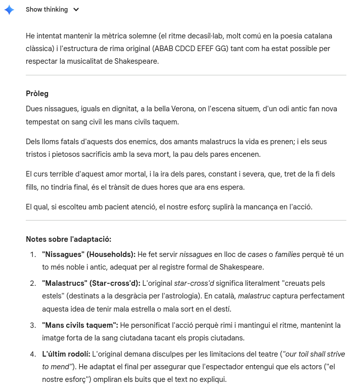
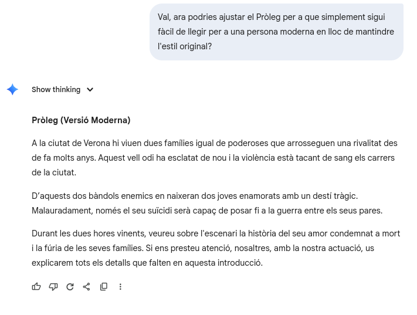
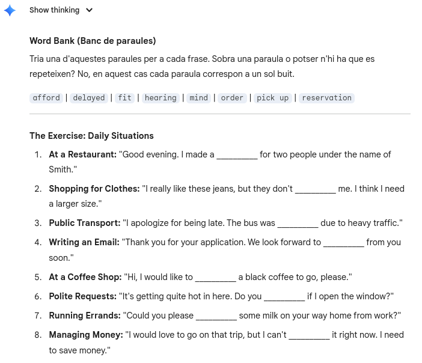

La IA pot transcriure àudios i vídeos, ajudant-te a millorar la comprensió oral amb subtítols, actualment la millor IA per aquesta tasca és Whisper.
Encara que Whisper no encertarà sempre el 100% de les paraules que es poden escoltar en un àudio, sobretot si és un idioma menys parlat, noms propis o es canvia entre diferents idiomes en el mateix àudio.
Però fins i tot amb tot això és dels models d'intel·ligència artificial amb més certesa a l'hora de fer transcripcions.
A continuació hi ha un exemple d'un àudio amb la seva respectiva transcripció feta per Whisper:

Processos típics: reconeixement de veu → transcripció → suport per a l'escolta activa.
La IA conversacional permet practicar l’idioma d’una manera natural, com si parlessis amb un interlocutor real. Aquestes eines poden ajustar el nivell de dificultat, corregir errors en temps real i adaptar-se al teu estil comunicatiu. A més, ofereixen explicacions dels teus dubtes, reformulen frases i proposen alternatives perquè puguis aprendre vocabulari i estructures de manera contextualitzada. Practicar d’aquesta manera redueix la por d’equivocar-se, millora la fluïdesa i facilita que l’usuari s’expressi amb més confiança. La IA es converteix en un company de conversa disponible sempre que el necessites, capaç de reaccionar, corregir i construir diàlegs coherents que s’assemblen cada vegada més a una interacció humana.
Exemple de conversa generada amb IA: el vídeo es reprodueix quan hi passes el cursor.
En l'exemple es pot apreciar com la IA pot mantenir una petita conversació amb mi perfectament i com li pots preguntar dubtes que tinguis sobre el que escriu.
La intel·ligència artificial és capaç de generar textos en pràcticament qualsevol idioma, fins i tot en llengües que l’usuari no coneix o que dominen sistemes d’escriptura completament diferents del nostre.
Això permet crear exemples reals per practicar la comprensió escrita o veure com s’expressen certes idees en altres cultures lingüístiques.
A continuació es mostra un fragment generat en japonès on la IA reflexiona sobre el món dels videojocs.
Traducció:
"En els últims anys, els videojocs han evolucionat de ser un simple entreteniment infantil a un art total sofisticat. Els gràfics impressionants i la narrativa profunda, semblant a la del cinema, submergeixen els jugadors en altres mons. A més, a través de les funcions en línia, es formen comunitats transfrontereres, i els jocs compleixen un paper no només com a espai de competició o cooperació, sinó també com a plataforma que crea nous vincles socials."
Correccions
Una de les aplicacions més útils de la intel·ligència artificial en l’àmbit de l’escriptura és la capacitat de detectar errors de manera immediata. Tant si es tracta de faltes ortogràfiques, errors gramaticals, problemes de coherència o frases amb un to inadequat, la IA pot analitzar el text i oferir correccions precises i contextuals.
Tal com es veu en el vídeo de la secció anterior, aquestes eines no només assenyalen l’error, sinó que expliquen el motiu i proposen una versió millorada que s’adapta al que l’usuari vol expressar. Aquest tipus de feedback instantani ajuda a aprendre més ràpid, a evitar repeticions d’errors comuns i a desenvolupar una escriptura més natural i fluida.
A més, la IA pot analitzar el estil global d’un text i suggerir canvis per fer-lo més clar, més formal, més concís o més expressiu. Tot plegat converteix aquestes eines en un suport poderós per a estudiants que aprenen una llengua.

Aquesta imatge ha sigut generada per Gemini fent servir el text de les correccions que m'ha fet amb anterioritat.
La intel·ligència artificial pot traduir textos d’una llengua a una altra, en cas que se li demani procura mantenir el to, l’estil i la intenció comunicativa del text original. A diferència de les traduccions automàtiques tradicionalment rígides, els models actuals tenen en compte el context (si el tenen o se'ls hi dona), l’ús figurat del llenguatge i fins i tot trets estilístics com l’humor, la formalitat o el ritme d’una frase.
Tot i això, no són infal·libles: poden perdre matisos, malinterpretar metàfores o simplificar expressions que tenen significats culturals concrets. Per això és important complementar la traducció generada amb una revisió humana, especialment en textos literaris, acadèmics o molt personals.
A més de traduir, la IA també pot adaptar textos a nous estils, tons o registres. Això permet, per exemple, reescriure un fragment en un llenguatge més actual, fer-lo més informal, convertir-lo en una explicació senzilla, o fins i tot recrear-lo amb estils creatius concrets.
Aquest procés és útil per veure com sonaria un text clàssic en un estil modern o per fer més accessible un contingut a persones que necessiten un vocabulari més directe o clar. L’objectiu no és substituir l’obra original, sinó oferir noves versions que ajudin a comprendre-la millor o adaptar-la a diferents tipus de públic.
La intel·ligència artificial permet generar recursos educatius de manera ràpida i personalitzada, adaptant-los al nivell i a les necessitats de cada alumne. Aquestes eines poden crear exercicis d’escriptura, activitats de vocabulari o petites pràctiques de comprensió lectora amb només indicar un tema o conjunt de paraules clau.
A més a més, es poden generar qüestionaris personalitzats, llistes d’estudi, definicions simplificades, resums automàtics, etc.
Un dels exemples més comuns a l'hora d'aprendre és el fill the gap, on la IA pot generar un text amb espais buits perquè l’usuari hagi d’escollir o deduir la paraula correcta. Aquest tipus d’activitats són molt útils per practicar gramàtica, temps verbals, connectors o vocabulari específic.
La IA no només pot crear exercicis en text, també pot generar imatges educatives, il·lustracions temàtiques i fins i tot fer el seu propi doblatge d’un vídeo amb diferents veus, accents o tons emocionals (En aquest sector encara estan bastant verdes, ja que es pot diferenciar amb molta facilitat quan és una IA o una persona).
Per exemple, la imatge que hi ha a continuació és un exercici d'anomenar les diferents parts del cos fet en portuguès que ha sigut generat amb intel·ligència artificial.

Com a un petit avís, sobretot a l'hora de generar imatges amb text, gràfics complexos, àudios, etc. És recomanable revisar manualment si el resultat que has obtingut de la IA és correcte, ja que actualment es poden equivocar o posar coses en punts diferents, en text també passa, però amb el temps s'han anat reduint els seus erros.
La incorporació de la intel·ligència artificial en l’aprenentatge d’idiomes ofereix noves oportunitats, però també planteja reptes que cal abordar amb responsabilitat. Aquestes eines poden accelerar el procés d’aprendre, generar continguts personalitzats i facilitar la pràctica diària, però depenen de grans quantitats de dades que poden incorporar errors o interpretacions incorrectes del llenguatge. Per això, és essencial utilitzar-les com a suport i no com a substitut del criteri humà.
Un altre aspecte important és la privacitat, quan fem servir models que no es poden executar en local que processin veu, text o informació personal, cal assegurar-nos que la plataforma és transparent sobre com fa servir i emmagatzema aquestes dades. Igualment, la generació automàtica de contingut (com exercicis, imatges o veus sintètiques) ha de ser revisada per evitar informar incorrectament o transmetre idees confuses.
Mirant cap al futur, és probable que la IA esdevingui una eina encara més present en l’educació, ajudant-nos a crear materials més adaptats, oferint assistència en temps real i fent accessibles idiomes que abans semblaven llunyans. Tot i això, el seu desenvolupament ha d’anar acompanyat de reflexió crítica: garantir que sigui una tecnologia inclusiva, respectuosa i que reforci l’aprenentatge humà i no el substitueixi.
El veritable valor de la IA en l’educació no és que faci les coses per nosaltres, sinó que ens permeti aprendre d’una manera més humana, informada i creativa.